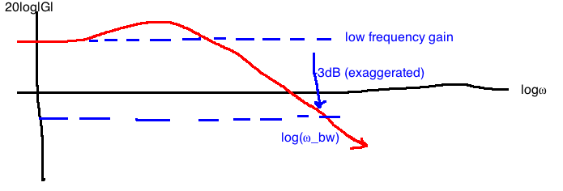
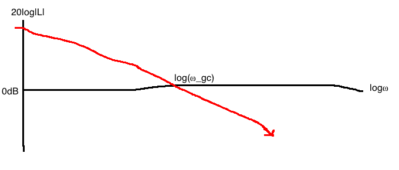
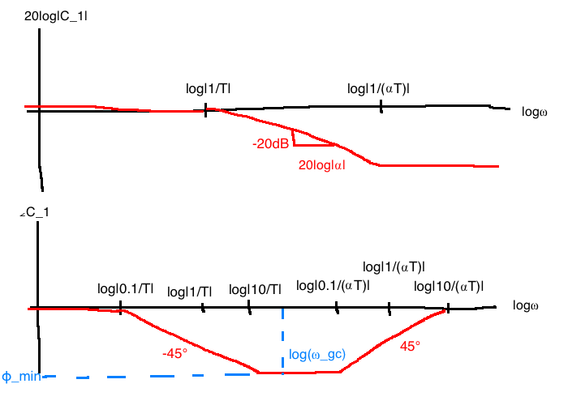
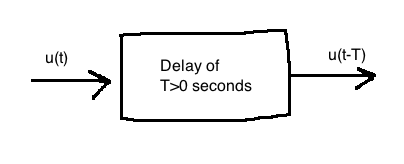

If a system is stable, how stable is it? This depends on how much error/uncertainty there is in the plant model. Stability margins help answer the question of how much inaccuracy the system can handle. Best understoodusing Nyquist plots, but Bode plots work too
Think of \phi=0 as out nominal design
Our phase margin \Phi_{pm} = \max\left\{\bar{\phi} \gt 0: \text{ closed-loop stability for } \phi \in [1, \bar{\phi})\right\}
Large K_{gm}, \phi_{pm} not only ensure robustness, but also good transient behaviour. A system with small K_{gm}, \Phi_{pm} is nearly unstable which could mean slow response and oscillatory behaviour.

Let L(s) := C(s)P(s)H(s). Draw the Bode plot of L(j\omega).
Matlab:
We focus on:
\frac{Y(s)}{R(s)} = \frac{C(s)P(s)}{1+C(s)P(s)} = G(s) 
Define the loop transfer function: L(s) = C(s)P(s) We can see the open-loop gain crossover frequency: 
“Normally,” \omega_{gc} \lt \omega_{bw} \lt \omega_{pc}. For design purposes, we’ll use a rule of thumb: \omega_{gc} \approx \omega_{bw}
Damping ratio: \zeta Phase margin: \Phi_{pm}
This relationship can be found in closed form for second-order systems.

\frac{Y(s)}{R(s)} = \frac{\omega_n^2}{s^2+2\zeta\omega_ns + \omega_n^2}
A messy calculation gives: \Phi_{pm}=\tan^{-1}\left(2\zeta\left((1+4\zeta^4)^{\frac{1}{2}}-2\zeta^2\right)^{\frac{-1}{2}}\right)


Lag controller: \begin{aligned} C(s) &= KC_1(s)\\ &= K\frac{\alpha Ts+1}{Ts+1}, \quad 0 \lt \alpha \lt 1, \quad T \gt 0, \quad K \gt 0 \end{aligned}
Pole and zero locations for a lag controller:

C(0)=K 
Key befefit: Reduce high frequency gain without changing phase
\begin{aligned} P(s) &= \frac{1}{s(s+2)}\\ \\ C(s) &= \text{lag controller}\\ &= K\frac{\alpha Ts+1}{Ts+1} \end{aligned}
Specs:
Steps 1: Choose K to meet e_{ss} spec. For now, assume C(s) provides IO stability s we can apply FVT. \begin{aligned} e_{ss} &= \lim_{t\rightarrow \infty}e(t)\\ &= \lim_{s \rightarrow 0} sE(s)\\ &= \lim_{s \rightarrow 0} s\frac{1}{1+C(s)P(s)} R(s)\\ &= \lim_{s \rightarrow 0} s \frac{1}{1+\frac{K\alpha Ts+1}{Ts+1} \frac{1}{s(s_2)}} \frac{1}{s^2}\\ &= \frac{2}{K} \le 0.05 \Leftrightarrow K \ge 40 \end{aligned} Take K=40
(Step 2) Next, draw a Bode plot of KP(j\omega)=\frac{40}{s(s+2)}. From the plot, we see that the phase margin \Phi_{pm}=18^\circ (not to spec) at \omega_{gc}=6.17 rad/s.
Because it is not to spec, we design C_1(s)=\frac{\alpha Ts+1}{Ts+1}. We want \Phi_{pm}^{desired}=45^\circ, so we’ll aim for 50^\circ since \angle C_1(j\omega) only approaches zero asymptotically.
From out Bode plot in Step 2, we observe: \Phi_{pm}^{desired} = 50^\circ = 180^\circ + \angle KP(j\omega) \text{ when } \omega=1.7\text{rad/s} The idea is to reduce the gain at \omega=1.7 rad/s so that this becomes the gain crossover frequency and do so without changing the phase.
The gain of KP(j\omega) at \omega=1.7 rad/s is 19dB, so we want to reduce by 19dB to make it the crossover frequency. 20log|\alpha|=-19\text{dB} \Leftrightarrow \alpha=\frac{1}{9}
Now pick T so that \angle C(j\omega)\approx 0 at \omega=1.7rad/s. \frac{10}{\alpha T} \le 1.7 We’ll pick T=52.7 to get the final controller: C(s)=40 \frac{\frac{1}{9} \cdot 52.7s+1}{52.7s=1}=\frac{234.2s+40}{52.7s+1}
We verify with a simulation. The Bode plot of C(s)P(s) yields \Phi_{pm}=44.6^\circ.
Specs:
Procedure:
\begin{aligned} C(s) &= KC_1(s)\\ &= K\frac{\alpha Ts+1}{Ts+1}, \quad \alpha \gt 1, \quad K,T \gt 0 \end{aligned}

Uses
\omega_m = \frac{1}{T\sqrt{\alpha}} This is the frequency at which the lead controller adds max phase.
\phi_{max} = \sin^{-1}\left(\frac{\alpha-1}{\alpha+1}\right) \alpha = \frac{1+\sin{\phi_{max}}}{1 - \sin{\phi_{max}}} This is the max phase added by the lead controller.
P(s) = \frac{1}{s(s+2)}
Specs:
We want to explress the lead controller in the form: C(s)=\frac{\hat{K}}{\sqrt{\alpha}} \frac{\alpha Ts+1}{Ts+1}
First, choose \hat{K} to meet the steady-state spec using FVT. In this case, we get \hat{K} \ge 40. We then want to boost \hat{K} by around 10dB to account for effective \alpha. Our final result is \hat{K}=40\cdot \sqrt{10}.
Next, draw a Bode plot of \hat{K}P(j\omega) and observe that we have \Phi_{pm}=10.2^\circ at \omega_{gc}=11.2 rad/s. So we set \omega_m = \omega_{gc}. We need to add \Phi_{pm}^{desired} - \Phi_{pm} = 45-10.2 = 34.8^\circ. Therefore, set \phi_{max} = 34.8^\circ. This gives us \alpha=3.66.
(This also gives K=\frac{\hat{K}}{\sqrt{\alpha}}=66.13.)
Then, make sure we add \phi_{max} at the correct frequency. T=\frac{1}{\omega_m\sqrt{\alpha}}=0.0467
Combining these: C(s)=66.13 \frac{3.66\cdot 0.0467s+1}{0.0467s+1} = \frac{241.9(s+5.85)}{s+21.43}
Finally, verify design. Draw the Bode plot of C(s)P(s) yields \Phi_{pm}=45^\circ, \omega_{gc}=11.1 rad/s.
Specs:
Procedure:
P(s)=\frac{10}{s^2-10} Specs:
We get: C(s)=3.64\frac{7.55\cdot 0.0364s+1}{0.0364s+1} = \frac{27.4 (s+3.65)}{s+27.47}
In this case, the closed-loop bandwidth ends up being 11.5 rad/s, so our approximation \omega_{gc} \approx \omega_{BW} worked well.
How much delay can we tolerate in our system before losing stability?
 This diagram has the transfer function T(s) = e^{-sT}.
Bode plot of the delay: \left|e^{-j\omega T}\right|=1, \angle e^{-j\omega T}=-\omega T. The time delay only affects phase.